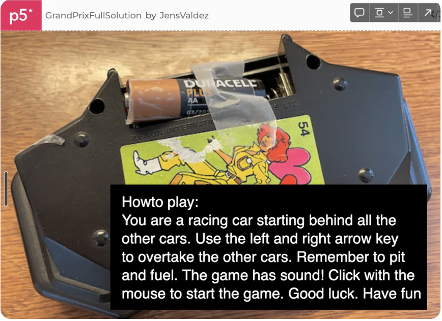
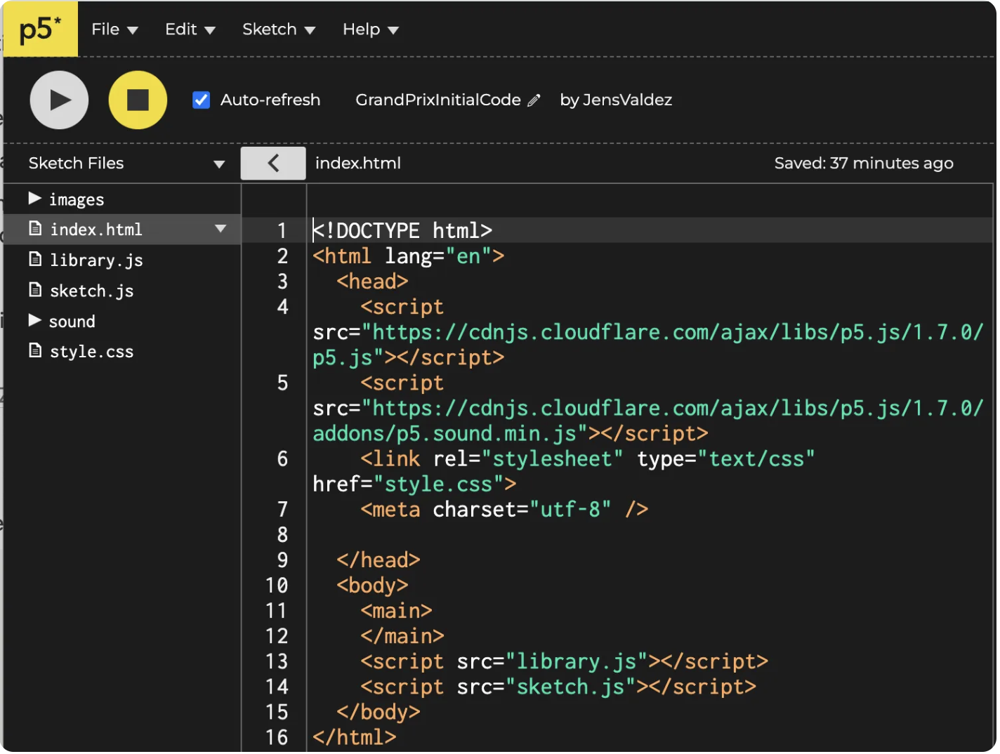

Opgave 2 - Grand Prix Race
Indholdsfortegnelse
- Introduktion
- Start her
- Delopgave 1: Hero's bevægelse
- Delopgave 2: Vis position
- Delopgave 3: Vinderbetingelse
- Delopgave 4: Kollision
- Delopgave 5: Liv
- Delopgave 6: Hegn
- Delopgave 7: Manglende hegn (venstre)
- Delopgave 8: Pit stop
- Delopgave 9: Kør i pit
- Delopgave 10: Konsekvens af ikke at pitte
- Delopgave 11: Manglende hegn (højre)
- Delopgave 12: Flagmand
- Delopgave 13: Brændstof
- Delopgave 14: Konsekvens af manglende brændstof
- Delopgave 15: Øget sværhedsgrad
- Delopgave 16: Genstart
- Delopgave 17: Startbesked
- Delopgave 18: Startsekvens
- Delopgave 19: Lyd
- Færdig løsning
Introduktion
Vi skal lave følgende spil der hedder Grand Prix Race:
Prøv spillet her: https://editor.p5js.org/JensValdez/full/wzU6IbK3X
Du kan prøve det af ovenfor så du kender funktionaliteten. Se om du kan vinde løbet.
Når du skal lave en større opgave er det nemmest at dele den op i mindre delopgaver som du godt kan løse. For at hjælpe har jeg oprettet en masse delopgaver. Hvis du går i stå må du gerne se på løsningenseksemplet for delopgaven. Herefter skal du selv prøve at løse den. Det er fint hvis du finder dine egne løsninger til delopgaverne. Det er dog en god ide altid at se løsningseksemplet for hver delopgave igennem og forstå det efter at du har løst en delopgave.
Det er en lidt avanceret opgave som har fokus på følgende:
- Hvordan man kan lave et bibliotek af funktioner der gør det nemt at vise grafikken i spillet.
- Hvordan en opgave kan deles ind i mindre delopgaver som er godt at løse.
- Hvordan man kan strukturere koden med en styringsfunktion og mindre hjælpe funktioner så koden er til at overskue.
- Hvordan man kan håndtere de forskellige tilstande som spillet kan være i og styre dialogen med brugeren.
- Hvordan funktionalitet kan deles op så hjælpefunktionerne kun gør en ting.
- Hvor man kan gøre brug af tilfældighed til at gøre hver spiloplevelse unique.
- Hvordan man kan starte med at lave den mest simple version af et spil men som stadig kan spilles hvorefter man gradvist tilføjer flere og flere lækre detaljer.
Start her
Start med at forstå og afprøve biblioteks funktionerne der håndterer grafikken i spillet. Dette kan findes her:
https://editor.p5js.org/JensValdez/sketches/WZp_UCt6K
Grand Prix spillet har følgende index.html fil. Som det ses nedenfor refereres både til library.js og sketch.js. Vi har lige afprøvet at funktionerne (til at vise spillets grafik) og en timer (der kan tælle ned fra et antal milisekunder) i library.js virker. Vi skal derfor udelukkende fokusere på spil logikken når vi laver spillet. Herudover gør det koden nemmere at læse når vi har gemt implementeringsdetaljerne for at vise grafik elementer ned i library.js filen.
Forstå og afprøv herefter start kode skabelonen til spillet.
// GrandPrixInitialCode - Add so that hero can also move right
let cars = [];
let gameState;
let gameAction;
let gameStepTimer;
let rowCounter;
let heroLanePosition;
function setup() {
createCanvas(600, 444);
initializeGameState();
}
function initializeGameState() {
setInitialValues();
setImageObjectPositions();
generateCarStream();
gameState = "GAME-IN-PROGRESS";
}
function draw() {
switch (gameState) {
case "GAME-IN-PROGRESS":
handeGameAction();
showGameState();
updateGameState();
break;
}
}
function keyPressed() {
if (gameState == "GAME-IN-PROGRESS") {
if (keyCode === LEFT_ARROW) {
gameAction = "MOVE-LEFT";
}
}
}
function handeGameAction() {
switch (gameAction) {
case "MOVE-LEFT":
moveLeft();
gameAction = "";
break;
default:
break;
}
}
function moveLeft() {
if (
heroLanePosition > 0
) {
heroLanePosition--;
}
}
function setInitialValues() {
textSize(32);
fill(0);
gameAction = "";
rowCounter = 1;
heroLanePosition = 1;
gameStepTimer = new CoolDownTimer();
gameStepTimer.setCoolDownInterval(900);
gameStepTimer.startCoolDownTimer();
}
function generateCarStream() {
let numberOfCars;
for (let row = 1; row < 106; row++) {
cars[row] = [];
numberOfCars = 0;
for (let column = 0; column < 3; column++) {
if (
random(1) < 0.5 &&
numberOfCars < 2 &&
row > 5
) {
cars[row][column] = "CAR";
numberOfCars++;
} else {
cars[row][column] = "EMPTY";
}
}
}
}
function showGameState() {
displayBackground();
showCars();
}
function showCars() {
for (let row = 1; row < 6; row++) {
for (let column = 0; column < 3; column++) {
if (cars[rowCounter + row][column] == "CAR") {
displayCar(row, column);
}
}
}
if (heroLanePosition >= 0 && heroLanePosition <= 2) {
displayCar(0, heroLanePosition);
}
}
function updateGameState() {
if (gameStepTimer.coolDownTimeLeft() > 0) {
return;
}
rowCounter++;
gameStepTimer.startCoolDownTimer();
}
Tag udgangspunkt i ovenstående kode ved at gå ind på koden (linket nedenfor) og vælge File → Duplicate
https://editor.p5js.org/JensValdez/sketches/V0TYx9s7U
Giv spillet et navn og husk at gemme løbende. Lad os kalde bilen man styre for “Hero”.
Delopgave 1: Hero kan flytte til højre
Tilret så Hero også kan flytte sig til højre.
Prøv løsningen til delopgaven her: https://editor.p5js.org/JensValdez/full/TJLYcmq_b
Delopgave 2: Vis Hero's position
Tilret så Hero’s position vises øverst til venstre.
Prøv løsningen til delopgaven her: https://editor.p5js.org/JensValdez/full/-5KREsGfN
Delopgave 3: Vind løbet
Tilret så man kan vinde løbet
Prøv løsningen til delopgaven her: https://editor.p5js.org/JensValdez/full/d5Tl7twp9
Delopgave 4: Tab spillet ved kollision
Tilret så man taber spillet hvis man støder ind i de andre biler (dvs. hvis man ikke når at overhale)
Prøv løsningen til delopgaven her: https://editor.p5js.org/JensValdez/full/lHz7x1Fv_
Delopgave 5: Tre liv
Tilret så man har tre liv.
Prøv løsningen til delopgaven her: https://editor.p5js.org/JensValdez/full/cRVp-RBhm
Delopgave 6: Hegn på begge sider
Sæt hegn op på begge sider af vejbanerne
Prøv løsningen til delopgaven her: https://editor.p5js.org/JensValdez/full/6XbEWsO2F
Delopgave 7: Manglende hegn til venstre
Tilret så hegnet til venstre nogle gange mangler
Prøv løsningen til delopgaven her: https://editor.p5js.org/JensValdez/full/gcu4bP543
Delopgave 8: Vis Pit stop
Tilret så Pit stop vises hvis der ikke er et hegn i venstre side af vejbanerne.
Prøv løsningen til delopgaven her: https://editor.p5js.org/JensValdez/full/jCpschEd3
Delopgave 9: Flyt Hero i Pit
Tilret så man kan flytte Hero i Pit
Prøv løsningen til delopgaven her: https://editor.p5js.org/JensValdez/full/AtykqcbJG
Delopgave 10: Mist et liv ved ikke at pitte
Tilret så man mister et liv hvis man ikke kører i Pit
Prøv løsningen til delopgaven her: https://editor.p5js.org/JensValdez/full/gehmhGxNR
Delopgave 11: Manglende hegn til højre
Tilret så hegnet til højre nogle gange mangler
Prøv løsningen til delopgaven her: https://editor.p5js.org/JensValdez/full/uY9JVSx1s
Delopgave 12: Mand med flag
Tilret så der vises en mand med et flag i stedet for det næst nederste højre hegn (hvis det mangler)
Prøv løsningen til delopgaven her: https://editor.p5js.org/JensValdez/full/r4R1EEw0Q
Delopgave 13: Få brændstof
Tilret så man kan flytte Hero ud til højre for at få brændstof (hvis der står en mand med et flag)
Prøv løsningen til delopgaven her: https://editor.p5js.org/JensValdez/full/zivAgdun8
Delopgave 14: Mist et liv ved ikke at få brændstof
Tilret så man mister et liv hvis man ikke får brændstof
Prøv løsningen til delopgaven her: https://editor.p5js.org/JensValdez/full/Aq5UrpSrc
Delopgave 15: Spillet bliver hurtigere
Tilret så spillet løbende (i intervaller) bliver hurtigere og hurtigere.
Prøv løsningen til delopgaven her: https://editor.p5js.org/JensValdez/full/_rMV0-3ww
Delopgave 16: Genstart spillet
Tilret så man kan genstarte spillet ved at klikke med musen
Prøv løsningen til delopgaven her: https://editor.p5js.org/JensValdez/full/kukWymbCB
Delopgave 17: Start besked
Tilret så der kommer en start besked.
Prøv løsningen til delopgaven her: https://editor.p5js.org/JensValdez/full/_ogK8TGct
Delopgave 18: Billedsekvens ved start
Tilret så der kommer en lille billede sekvens når man klikker med musen efter man har fået vist start beskeden.
Prøv løsningen til delopgaven her: https://editor.p5js.org/JensValdez/full/hmUaUU2-o
Delopgave 19: Lyd-actions
Tilret så der kommer lyd når man laver de forskellige actions.
Prøv løsningen til delopgaven her: https://editor.p5js.org/JensValdez/full/wzU6IbK3X
Færdig løsning:
Task 2 - Grand Prix Race
Table of Contents
- Introduction
- Start here
- Subtask 1: Hero's movement
- Subtask 2: Show position
- Subtask 3: Winning condition
- Subtask 4: Collision
- Subtask 5: Lives
- Subtask 6: Fence
- Subtask 7: Missing fence (left)
- Subtask 8: Pit stop
- Subtask 9: Drive into pit
- Subtask 10: Consequence of not pitting
- Subtask 11: Missing fence (right)
- Subtask 12: Flag man
- Subtask 13: Fuel
- Subtask 14: Consequence of lack of fuel
- Subtask 15: Increased difficulty
- Subtask 16: Restart
- Subtask 17: Start message
- Subtask 18: Start sequence
- Subtask 19: Sound
- Finished solution
Introduction
We are going to make the following game called Grand Prix Race:
Try the game here: https://editor.p5js.org/JensValdez/full/wzU6IbK3X
You can try it out above so you know the functionality. See if you can win the race.
When you have to do a larger task, it is easiest to divide it into smaller subtasks that you can solve. To help, I have created a lot of subtasks. If you get stuck, you are welcome to look at the solution example for the subtask. After that, you should try to solve it yourself. It's fine if you find your own solutions to the subtasks. However, it is a good idea to always look through the solution example for each subtask and understand it after you have solved a subtask.
This is a slightly advanced task that focuses on the following:
- How to create a library of functions that makes it easy to display the graphics in the game.
- How a task can be divided into smaller subtasks that are good to solve.
- How to structure the code with a control function and smaller helper functions so that the code is easy to manage.
- How to handle the different states the game can be in and control the dialogue with the user.
- How functionality can be divided so that the helper functions only do one thing.
- Where you can use randomness to make each game experience unique.
- How to start by making the simplest version of a game that can still be played, after which you gradually add more and more nice details.
Start here
Start by understanding and trying out the library functions that handle the graphics in the game. This can be found here:
https://editor.p5js.org/JensValdez/sketches/WZp_UCt6K
The Grand Prix game has the following index.html file. As can be seen below, both library.js and sketch.js are referenced. We have just tested that the functions (for displaying the game's graphics) and a timer (which can count down from a number of milliseconds) in library.js work. We therefore only need to focus on the game logic when we make the game. In addition, it makes the code easier to read when we have saved the implementation details for displaying graphic elements down in the library.js file.
Then understand and try out the starting code template for the game.
// GrandPrixInitialCode - Add so that hero can also move right
let cars = [];
let gameState;
let gameAction;
let gameStepTimer;
let rowCounter;
let heroLanePosition;
function setup() {
createCanvas(600, 444);
initializeGameState();
}
function initializeGameState() {
setInitialValues();
setImageObjectPositions();
generateCarStream();
gameState = "GAME-IN-PROGRESS";
}
function draw() {
switch (gameState) {
case "GAME-IN-PROGRESS":
handeGameAction();
showGameState();
updateGameState();
break;
}
}
function keyPressed() {
if (gameState == "GAME-IN-PROGRESS") {
if (keyCode === LEFT_ARROW) {
gameAction = "MOVE-LEFT";
}
}
}
function handeGameAction() {
switch (gameAction) {
case "MOVE-LEFT":
moveLeft();
gameAction = "";
break;
default:
break;
}
}
function moveLeft() {
if (
heroLanePosition > 0
) {
heroLanePosition--;
}
}
function setInitialValues() {
textSize(32);
fill(0);
gameAction = "";
rowCounter = 1;
heroLanePosition = 1;
gameStepTimer = new CoolDownTimer();
gameStepTimer.setCoolDownInterval(900);
gameStepTimer.startCoolDownTimer();
}
function generateCarStream() {
let numberOfCars;
for (let row = 1; row < 106; row++) {
cars[row] = [];
numberOfCars = 0;
for (let column = 0; column < 3; column++) {
if (
random(1) < 0.5 &&
numberOfCars < 2 &&
row > 5
) {
cars[row][column] = "CAR";
numberOfCars++;
} else {
cars[row][column] = "EMPTY";
}
}
}
}
function showGameState() {
displayBackground();
showCars();
}
function showCars() {
for (let row = 1; row < 6; row++) {
for (let column = 0; column < 3; column++) {
if (cars[rowCounter + row][column] == "CAR") {
displayCar(row, column);
}
}
}
if (heroLanePosition >= 0 && heroLanePosition <= 2) {
displayCar(0, heroLanePosition);
}
}
function updateGameState() {
if (gameStepTimer.coolDownTimeLeft() > 0) {
return;
}
rowCounter++;
gameStepTimer.startCoolDownTimer();
}
Start med koden ovenfor ved at gå ind på koden (linket nedenfor) og vælge File → Duplicate
https://editor.p5js.org/JensValdez/sketches/V0TYx9s7U
Giv spillet et navn og husk at gemme løbende. Lad os kalde bilen man styre for “Hero”.
Subtask 1: Hero can move right
Adjust so that Hero can also move to the right.
Try the solution to the subtask here: https://editor.p5js.org/JensValdez/full/TJLYcmq_b
Subtask 2: Show Hero's position
Adjust so that Hero's position is shown at the top left.
Try the solution to the subtask here: https://editor.p5js.org/JensValdez/full/-5KREsGfN
Subtask 3: Win the race
Adjust so that you can win the race
Try the solution to the subtask here: https://editor.p5js.org/JensValdez/full/d5Tl7twp9
Subtask 4: Lose the game on collision
Adjust so that you lose the game if you crash into the other cars (i.e. if you don't manage to overtake)
Try the solution to the subtask here: https://editor.p5js.org/JensValdez/full/lHz7x1Fv_
Subtask 5: Three lives
Adjust so that you have three lives.
Try the solution to the subtask here: https://editor.p5js.org/JensValdez/full/cRVp-RBhm
Subtask 6: Fence on both sides
Put up a fence on both sides of the lanes
Try the solution to the subtask here: https://editor.p5js.org/JensValdez/full/6XbEWsO2F
Subtask 7: Missing fence on the left
Adjust so that the fence on the left is sometimes missing
Try the solution to the subtask here: https://editor.p5js.org/JensValdez/full/gcu4bP543
Subtask 8: Show Pit stop
Adjust so that Pit stop is displayed if there is no fence on the left side of the lanes.
Try the solution to the subtask here: https://editor.p5js.org/JensValdez/full/jCpschEd3
Subtask 9: Move Hero to Pit
Adjust so that you can move Hero to the Pit
Try the solution to the subtask here: https://editor.p5js.org/JensValdez/full/AtykqcbJG
Subtask 10: Lose a life by not pitting
Adjust so that you lose a life if you don't go to the Pit
Try the solution to the subtask here: https://editor.p5js.org/JensValdez/full/gehmhGxNR
Subtask 11: Missing fence on the right
Adjust so that the fence on the right is sometimes missing
Try the solution to the subtask here: https://editor.p5js.org/JensValdez/full/uY9JVSx1s
Subtask 12: Man with flag
Adjust so that a man with a flag is displayed instead of the second to last right fence (if it is missing)
Try the solution to the subtask here: https://editor.p5js.org/JensValdez/full/r4R1EEw0Q
Subtask 13: Get fuel
Adjust so that you can move Hero to the right to get fuel (if there is a man with a flag)
Try the solution to the subtask here: https://editor.p5js.org/JensValdez/full/zivAgdun8
Subtask 14: Lose a life by not getting fuel
Adjust so that you lose a life if you don't get fuel
Try the solution to the subtask here: https://editor.p5js.org/JensValdez/full/Aq5UrpSrc
Subtask 15: The game gets faster
Adjust so that the game gets faster and faster at regular intervals.
Try the solution to the subtask here: https://editor.p5js.org/JensValdez/full/_rMV0-3ww
Subtask 16: Restart the game
Adjust so that you can restart the game by clicking the mouse
Try the solution to the subtask here: https://editor.p5js.org/JensValdez/full/kukWymbCB
Subtask 17: Start message
Adjust so that a start message appears.
Try the solution to the subtask here: https://editor.p5js.org/JensValdez/full/_ogK8TGct
Subtask 18: Image sequence at start
Adjust so that a small image sequence appears when you click the mouse after the start message has been displayed.
Try the solution to the subtask here: https://editor.p5js.org/JensValdez/full/hmUaUU2-o
Subtask 19: Sound actions
Adjust so that sound is played when you perform the various actions.
Try the solution to the subtask here: https://editor.p5js.org/JensValdez/full/wzU6IbK3X